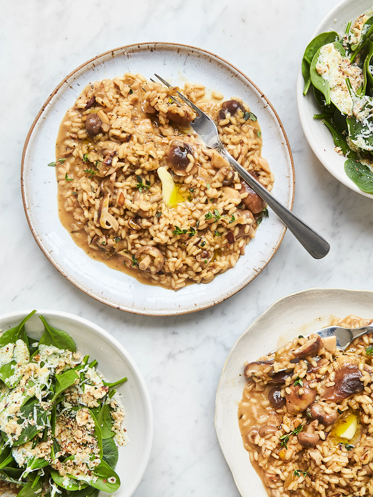

Mushroom Risotto

Ingredients
Risotto
- 1 Onion
- 2 Sticks of Celery
- Olive Oil
- 1 Bunch of Fresh Thyme (30g)
- 20g Dried Porcini Mushrooms
- 350g Mixed Mushrooms, such as chestnut, button, willa, shiitake
- 1.2 litres Organic Vegitable Stock
- 300g Arborio Risotto Rice
- 125ml White Wine
- 40g Parmesan or Vegetarian Hard Cheese
- 20g Unsalted Butter
Salad
- 30g Blanched Hazelnuts
- 1 Lemon
- 4 Tablespoons Natural Yoghurt
- Extra Virgin Olive Oil
- 100g Baby Spinach
Recipe
- Peel 1 onion, trim 2 sticks of celery, then finely chop both and place in a large high-sided pan on a medium heat with 1 tablespoon of olive oil.
- Strip in half the thyme leaves (15g) and cook for 10 minutes, or until softened, stirring occasionally.
- Put 20g of dried porcini mushrooms in a bowl, cover with boiling kettle water and leave to rehydrate.
- Tear up or halve any larger mushrooms (350g in total), keeping any smaller, delicate ones whole, then stir into the pan. Drain, roughly chop and add the porcini, reserving the soaking liquor.
- Simmer 1.2 litres of vegetable stock in a pan on a low heat, adding the reserved soaking liquor, discarding the last gritty bit.
- Stir 300g of risotto rice into the mushroom pan for 2 minutes, then pour in 125ml of white wine and stir until absorbed.
- Add a ladleful of stock and wait until it’s been fully absorbed before adding the next. Repeat this, stirring and massaging the starch out for the rice for 20 minutes, or until the rice is cooked but still holding its shape and the risotto is oozy.
- Meanwhile, toast 30g of blanched hazelnuts in a frying pan over a medium heat until golden, then roughly bash in a pestle and mortar.
- Squeeze the juice from 1 lemon into a small bowl, then mix in 4 tablespoons of natural yoghurt, 4 tablespoons of extra virgin olive oil and a pinch of sea salt and black pepper.
- Divide 100g of baby spinach between 4 plates, dot over the dressing, then sprinkle over the hazelnuts.
- Turn off the heat under the risotto, finely grate in 35g of Parmesan and strip in the remaining thyme leaves (15g), then beat in 20g of unsalted butter and season to taste with salt and pepper.
- Cover and leave to relax for 2 minutes so it becomes creamy and oozy. Beat again, then serve right away with the salad, finishing it with a fine grating of Parmesan (5g).
Home